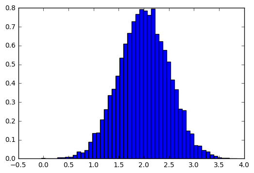
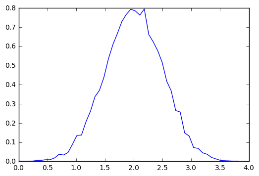

Numpy
NumPy is a commonly used Python data analysis package. By using NumPy, you can speed up your workflow, and interface with other packages in the Python ecosystem, like scikit-learn, that use NumPy under the hood. NumPy was originally developed in the mid 2000s, and arose from an even older package called Numeric. This longevity means that almost every data analysis or machine learning package for Python leverages NumPy in some way.
Download Wine Quality Data Set
|
Read dataset
|
(1599, 12)
| fixed acidity | volatile acidity | citric acid | residual sugar | chlorides | free sulfur dioxide | total sulfur dioxide | density | pH | sulphates | alcohol | quality | |
|---|---|---|---|---|---|---|---|---|---|---|---|---|
| 0 | 7.4 | 0.70 | 0.00 | 1.9 | 0.076 | 11.0 | 34.0 | 0.9978 | 3.51 | 0.56 | 9.4 | 5 |
| 1 | 7.8 | 0.88 | 0.00 | 2.6 | 0.098 | 25.0 | 67.0 | 0.9968 | 3.20 | 0.68 | 9.8 | 5 |
| 2 | 7.8 | 0.76 | 0.04 | 2.3 | 0.092 | 15.0 | 54.0 | 0.9970 | 3.26 | 0.65 | 9.8 | 5 |
| 3 | 11.2 | 0.28 | 0.56 | 1.9 | 0.075 | 17.0 | 60.0 | 0.9980 | 3.16 | 0.58 | 9.8 | 6 |
| 4 | 7.4 | 0.70 | 0.00 | 1.9 | 0.076 | 11.0 | 34.0 | 0.9978 | 3.51 | 0.56 | 9.4 | 5 |
|
(1599, 12)
|
(1599, 12)
Creating A NumPy Array
|
[[ 0. 0. 0. 0.]
[ 0. 0. 0. 0.]
[ 0. 0. 0. 0.]]
|
array([[ 0., 0., 0., 0., 0., 0.],
[ 0., 0., 0., 0., 0., 0.]])
|
dtype('float64')
|
float64
[[ 0.47340722 0.26032462 0.93331738 0.34234496]
[ 0.54765394 0.165398 0.51294266 0.4961539 ]
[ 0.06106089 0.34025539 0.31058294 0.21797288]]
|
[ 0. 5.55555556 11.11111111 16.66666667 22.22222222
27.77777778 33.33333333 38.88888889 44.44444444 50. ]
|
array([ 0, 5, 11, 16, 22, 27, 33, 38, 44, 50])
Array operations
|
array([ 15., 15., 15., ..., 16., 15., 16.])
|
|
array([ 30., 30., 30., ..., 32., 30., 32.])
|
array([ 141., 147., 147., ..., 176., 153., 176.])
|
array([[5, 7],
[7, 9]])
|
168074.78193999999
|
array([ 13303.1 , 843.985 , 433.29 , 4059.55 ,
139.859 , 25384. , 74302. , 1593.79794,
5294.47 , 1052.38 , 16666.35 , 25002. ])
|
array([ 84.5438 , 133.0548 , 109.699 , ..., 110.48174, 115.21547,
102.49249])
Matrix
|
[[ 1. 2.]
[ 3. 4.]]
|
matrix([[ 1., 3.],
[ 2., 4.]])
|
matrix([[ 19.],
[ 43.]])
|
matrix([[-2. , 1. ],
[ 1.5, -0.5]])
Vector Stacking
|
Histograms
|

